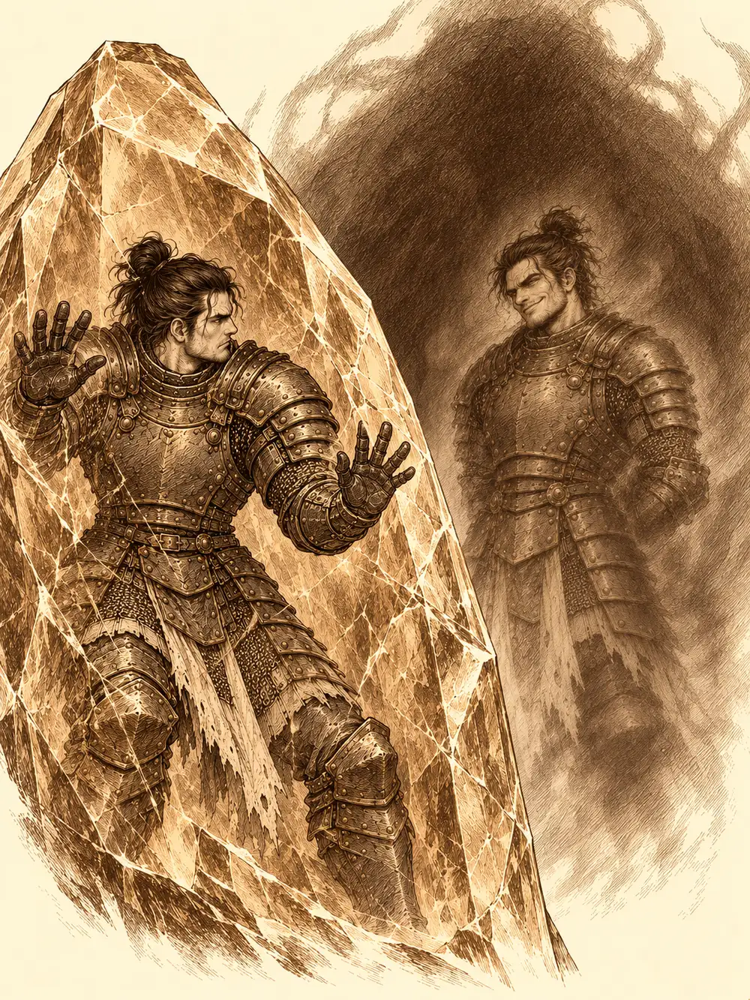

Capítulo 157
Las pruebas de Banzo
Libro IX · Mareas y muertos
Banzo olía a brea y a madera mojada. Se había pasado la semana en el astillero calafateando cascos, y por las tardes hablaba con Wel de la incursión tras la Puerta Negra, que seguía preparándose sin fecha. Cada vez estaba menos seguro de para qué servían los cazadores. Calista, por su parte, se había empeñado en que los tritones de Kuroto aprendieran a respetarla, para frenar desde dentro su influencia y que la vida de la gente no cambiara demasiado. Si los tritones y los cazadores llegaban a enfrentarse, decía, ella se moría.
Aquella mañana el goliat subió a palacio. Se cruzó en la escalera con Gelbreak y Mei, que iban a buscar unos papeles olvidados en el despacho, y antes de que pudiera saludar le saltó encima Shizuka.
"¡Banzo, Banzo! He aprendido un hechizo nuevo".
Juntó las manos y recitó unas palabras en una lengua que sonaba a ultratumba. El mundo se detuvo para todos menos para ella. Cuando volvió a moverse, Banzo estaba sentado en la bañera, del tamaño de un niño, y Arwen y varias cosas de la habitación habían cambiado de sitio sin que nadie lo hubiera visto. Shizuka le dio un golpecito en la cabeza, rompió el hechizo y el goliat recuperó su tamaño.
"A que no sabes cómo has llegado aquí".
Banzo se agachó a la altura de las dos niñas y bajó la voz. Iba a proponerles algo a aquel par de aburridos que siempre estaban en palacio. Si se enteraban de que ellas venían, dirían lo de siempre, que eran cosas de adultos. Así que tenían que seguirlos en secreto, sin dejarse ver, y aparecer cuando él diera la señal.
En el despacho, Calista aceptó enseguida la idea de salir unas horas a hacer cosas normales. El problema eran los cónsules y la perla, que no la dejarían en paz. Banzo se ofreció a montar una escena. Cuando Islil se acercó con algún papel, el goliat anunció a gritos una emergencia, cogió a la shogun en brazos y salió de palacio con ella a cuestas, entre tritones atónitos que llevaban la mano a la empuñadura sin saber qué hacer. Gelbreak, que no quería perderse la escena, fue detrás.
En la calle, Calista se disfrazó de humana y se rio por primera vez en muchos días. Necesitaba descansar del cargo. Le preguntó a Banzo cómo iban los cazadores, y él le contestó con sinceridad que no creía que estuvieran preparados para lo que venía. Cada uno pondría el pecho, como siempre, y no estaba seguro de que eso bastara. Calista le dijo que contara con ella. Y quiso hacerle un regalo por haber llegado el primero al rescate de Gelbreak.
En la herrería, Banzo miró capas y armas sin decidirse. Al final ella pagó quinientas monedas por un anillo de protección y se lo puso en la mano que le quedaba.
Hablaron del compromiso. La pareja lo había hecho para que no echaran a Gelbreak de palacio, más que por celebrar nada, pero Banzo les había contado las tradiciones de los goliats y les había gustado la idea de una fiesta. La cabeza de cabra la podían omitir.
Y entonces decidieron jugar. Habría pruebas y premios. Si ganaba Banzo, quería un beso de la shogun. Si ganaba Gelbreak, sería shogun por un día. Si ganaba Calista, los otros dos la ayudarían, sin preguntar ni negarse, en el próximo plan arriesgado que se le ocurriera.
La primera prueba consistía en robarle una prenda a Tsugami.
Banzo entró primero y la distrajo con tanta torpeza y tanto entusiasmo que salió de la tienda con un vestido bajo el brazo. Calista, todavía disfrazada, entró después y llenó a la modista de halagos mientras Nori, su sirviente invisible, se llevaba un conjunto de ropa de supervivencia. Al salir, la shogun le dejó caer a Tsugami que Gelbreak tenía algo que contarle, y el drow tuvo que aguantar una charla interminable de la modista hasta que llegó un guardia a preguntar algo y pudo escabullirse con otra prenda. Banzo le devolvió el vestido a Tsugami por medio del guardia. Calista le regaló la ropa robada a Banzo.
Los dos hombres improvisaron la segunda prueba sin avisarla. Se hicieron invisibles y le dejaron una nota: que los encontrara.
Calista mandó a su doble por un lado y a Nori por otro. Se fijó en los charcos de la calle, por si alguien pisaba alguno, y al final vio unas ramas que se movían solas entre los arbustos. Banzo se había olvidado de que era invisible y había cogido un par de ramas para esconderse mejor. Luego Calista siguió el rastro del elfo hasta una taberna, se transformó en dragón para cerrarle el paso por arriba, aguantó el conjuro con el que él intentó despistarla y lo atrapó.
Su punto le permitió elegir la siguiente prueba.
"Solo tenéis que bañar a Arwen. Sin hacerle daño".
Las niñas no estaban lejos. Banzo las buscó con la mirada entre los árboles: una cucaracha con una cinta verde en la cabeza y una araña los habían seguido toda la mañana.
Fueron al lago. Calista le pasó a Banzo una pastilla de jabón con disimulo; Arwen la vio y retrocedió dos pasos como un perro asustado.
"Tu mayor enemigo, quizá".
Banzo intentó convertir el baño en una prueba de valor. Gelbreak le explicó a la niña con mucho detalle qué clase de gusanos vivían en el barro del fondo y cómo huirían del jabón. Arwen hizo un puchero, y el goliat, que no tenía defensa contra eso, acabó revolcándose con ella en el barro. Gelbreak se quitó entonces un sombrero precioso y se lo ofreció a cambio del baño. Arwen lo aceptó con una condición: que entraran todos.
Entraron todos. La enjabonaron entre gritos. Arwen se vengó como pudo: hizo flotar por los aires a quien no se agarró a tiempo, confundió a Gelbreak, que se quedó un rato quieto en mitad del lago preguntándose dónde estaba, y Shizuka, desde la orilla, soltó unos rayos sobre todos los que tocaban el agua. Calista tuvo que poner orden con cara de muy pocos amigos. Al final reconoció el punto: Arwen estaba limpia. Banzo siguió un buen rato mirando a la niña con una devoción sospechosa; Arwen lo había encantado y todavía no se le había pasado.
Las niñas se fueron por su lado. Los adultos siguieron hacia la taberna para la última prueba, la de quién aguantaba más bebiendo.
Archi estaba allí.
Calista se detuvo en la puerta, sonrió de una manera que a Gelbreak no le gustó nada y desapareció un momento. Al poco entró otro gnomo, idéntico, con el mismo bigote y la misma manera de hablar, saludando a todo el mundo. Los dos Archi se miraron, se rodearon, se examinaron y acabaron abrazándose. Se sentaron juntos, tan pegados que nadie sabía cuál era cuál.
Ushi sirvió jarras y jarras. Uno de los dos gnomos cambiaba sus jarras llenas por las vacías del otro, y cuando Gelbreak lo vio, ese mismo gnomo le tocó el brazo y el drow olvidó lo que había visto. Al final, para rematar, el gnomo falso le ordenó al verdadero, con una voz que no admitía réplica, que se bebiera la copa más fuerte de la casa. Archi se la bebió.
Gelbreak salió a la calle a vomitar, y Banzo se tambaleaba junto a la puerta proclamando que había ganado.

El verdadero Archi se quedó en la barra, contento y luego triste, como les pasa a los borrachos. Lloraba. Ya lo habían echado de Conosur por robar inventos a otros para recuperar el prestigio de su familia. Había deshonrado a los suyos. No quería volver a hacerlo.
"Esta gente se ha portado bien con Archi".
El otro gnomo le preguntó qué había pasado. Archi le sonrió y le levantó el pulgar.
"Yo tenía razón. La esfera, querida. Puedo tocarla. Por el rayo. ¿Te acuerdas del rayo? Me pasó otra vez de pequeño. Ahora mi piel lo aguanta".
Calista se inclinó hacia él.
"¿Dónde está la esfera?".
"No está en palacio. Mañana puede estar. Hoy no".
Calista se quedó paralizada. Luego le clavó los ojos y le ordenó con toda la fuerza de su magia que se lo contara todo.
Archi sintió cómo esa voluntad lo apretaba, y dentro de su cabeza otra voz dijo que no, y la presión se rompió. Me he metido en la boca del lobo yo solo. Piensa, Archi. Empezó a contarle con todo detalle cómo había fabricado el mapa localizador.
Calista lo agarró de la ropa.
"¿Eres consciente del poder que tiene la energía elemental pura? ¿De que hay gente muy peligrosa detrás de esa esfera? Dame una sola razón para no dejarte tirado aquí e ir a buscarla yo misma".
Archi le dijo que la tenía guardada en un artefacto que él mismo había construido, donde nadie podía detectarla, y que no podía decir dónde porque saberlo era peligroso, porque alguien podría robarle ese conocimiento. Que si no confiaba en él, confiara en el gordito, que él lo llevaría. Calista le trazó encima un símbolo con el dedo, un sello que brilló un instante y se volvió invisible.
"Si sales de la ciudad o no vienes mañana a palacio, encontraré tus restos enseguida. El símbolo de la muerte se encargará de eso".
Era mentira, pero Archi se lo creyó.
"Si fallo, majestad, tiene mi cabeza en bandeja de plata".
Cuando lo soltó, Calista recuperó su aspecto y salió a buscar a Banzo. Le contó lo de la esfera y le pidió que vigilara al gnomo, que no saliera de la ciudad, y que no se lo contara a Tiari.
Al volver, Gelbreak la olió.
"No has bebido nada".
Ella intentó tocarle el brazo otra vez. Banzo sacó del bolsillo un objeto que llevaba, le dio un par de vueltas y el tiempo retrocedió unos segundos, justo lo suficiente para que los dos hombres vieran lo que no habían visto. Habían descubierto la trampa. Protestaron. Calista se encogió de hombros: había quedado la última, así que Gelbreak podía ser shogun un día. Y Banzo podía pedirle su favor. Quería un beso. Se lo dio en la mejilla.
Volvían a palacio cuando un hombre salió de un callejón y se detuvo delante de ellos.
"¡Señorita azul! ¡Señorito gruñón! ¡Señor grande!".
Era Sombra del Desierto. Llevaba días dando vueltas por la ciudad, buscando la salida del desierto en el que creía estar y chocando una y otra vez con unos muros que no podía atravesar. Eran las murallas de la ciudad.
A Calista no le preocupaba él. Le explicó a Banzo que, una noche, las niñas se habían colado en la biblioteca del shogunato y habían leído unos libros que no debían leer, y que de alguna manera los habían metido a varios dentro de unos cuentos. Habían estado en uno de piratas. Y en el cuento de donde venía aquel hombre. Al volver se habían traído a Sombra del Desierto y a una pistolera drow que llevaba un arma como las de Archi, de las que hacen ruido. Calista sospechaba que era ella quien había matado a los dos tritones que habían aparecido con aquellas heridas.
Mientras caminaban, en un tejado, una mujer con una pistola en una mano y un látigo enrollado en la otra se levantó y los vio pasar. Ninguno de los tres miró hacia arriba.
Mientras tanto, Archi volvió a oír la voz.
Estúpido.
Intentó resistirse con todo su ingenio y no pudo. Le ardía la piel, le ardía el cuerpo entero, y sintió que algo cruzaba a través de él, otro ser, como quien entra en una casa. Antes de que terminara de entrar, dio un par de vueltas a su guante y activó un protocolo que había preparado: R3 le lanzó un conjuro que le borró de la memoria el lugar donde estaba la esfera.
Luego se vio a sí mismo.
Estaba encerrado dentro de un cristal rojo. Al otro lado del cristal, otro Archi le sonreía. Esa sonrisa no era suya. El otro Archi se difuminó un poco y dejó ver, por un instante, lo que de verdad había detrás: una criatura enorme, que pronunció un nombre que ninguna lengua de Kuroto podría repetir.
"Este plano será mío".
Calista vistió y peinó a Gelbreak con sus propias manos para que ejerciera de shogun por un día. Él esperaba pasarlo bien incomodando a Wel. Primero recibió una lista de obligaciones escrita por las dos caras. Luego llegaron los cónsules con revisiones y firmas. Horas después seguía firmando, cada vez más impaciente, mientras ella leía y tomaba té.
Wel se sentó con Calista y dijo que no pensaba proteger al sustituto. Gelbreak amenazó al mensajero, a Jerry, y luego al general. Cuando anunció que decidiría el destino de las tropas de los tritones sin él, Wel se acercó por fin. Gelbreak quería mandar a parte de sus soldados al sur y dejar de desperdiciar su experiencia haciendo guardia en palacio. Wel defendió su despliegue y la obediencia exclusiva de sus hombres. Ninguno cedía. Un cónsul les explicó que una orden así necesitaba la firma de la mayoría de la mesa de guerra, y que una sola firma no servía.
Esa misma tarde, Serafina volvió a la casa de Sho para recoger unas herramientas que Guxi necesitaba. Estaba a oscuras. Ante una vela le pareció reconocer a Kurobane y quiso hablar con él, pero la voz que le respondió dijo ser mejor que el ninja, y que la debilidad de este le había permitido tomar el control.
"Osuray".
Intentó escapar y no pudo moverse. La sombra se acercó con el rostro surcado de venas oscuras y la hirió una y otra vez con un estoque negro, diciendo que era el castigo por una traición que no explicó. Serafina llamó a Kurobane, le pidió que reaccionara. Osuray le dijo que no estaba y que no iba a volver. Luego, con una daga, le grabó en el pecho un símbolo que ella reconoció de la habitación del ninja, y la dejó en el suelo sangrando, sin sentido. Antes de irse amenazó a quien intentara seguirlo.
Cuando la oscuridad se disipó, tres mujina salieron aterrados de los arbustos. Tip entró en la casa, encontró a Serafina y llamó a sus hermanos. Uno salió corriendo a buscar ayuda. Los otros dos se quedaron con ella, intentando ayudarla con unas manos demasiado pequeñas.
En palacio, dos soldados sujetaban a Tap, el mujina de la base, que se debatía y gritaba que Serafina estaba herida. Calista interrumpió el debate de la mesa de guerra y ordenó que lo soltaran. El pequeño animal intentó explicarse con gestos hasta que ella le habló en silvano.
"El chico ninja", dijo Tap. "Le clavó un arma en el costado. Mucha sangre. Se fue corriendo".
Gelbreak se levantó de la mesa. Calista ya estaba en pie.
"Buscad al cazador Kurobane. Es peligroso. Usad la fuerza que haga falta. Lo quiero vivo o muerto".
Salió del salón a paso rápido, y el drow fue tras ella.